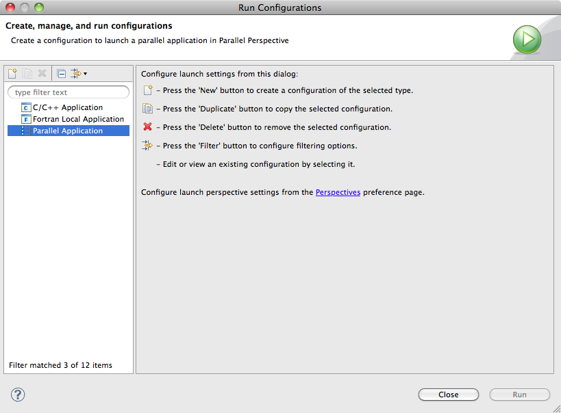
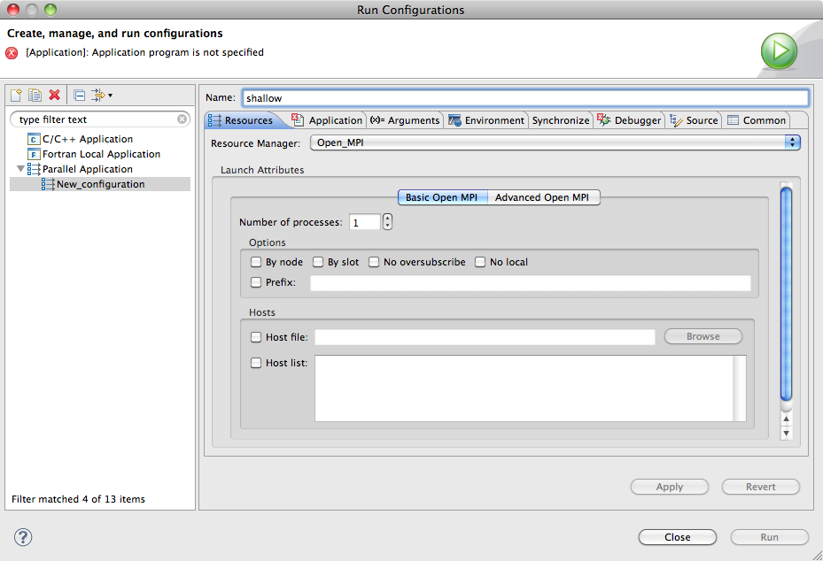
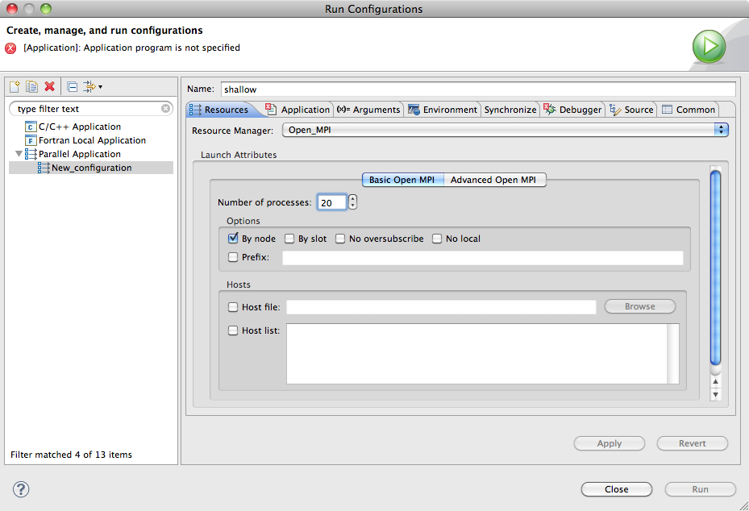
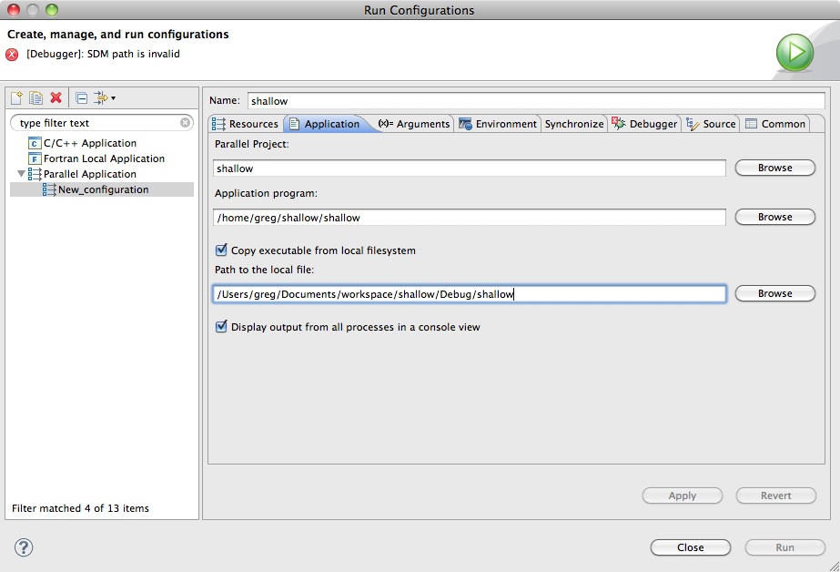
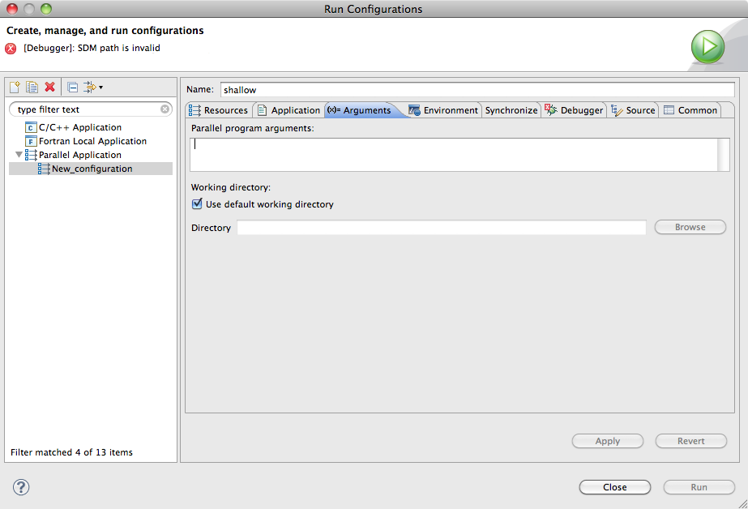
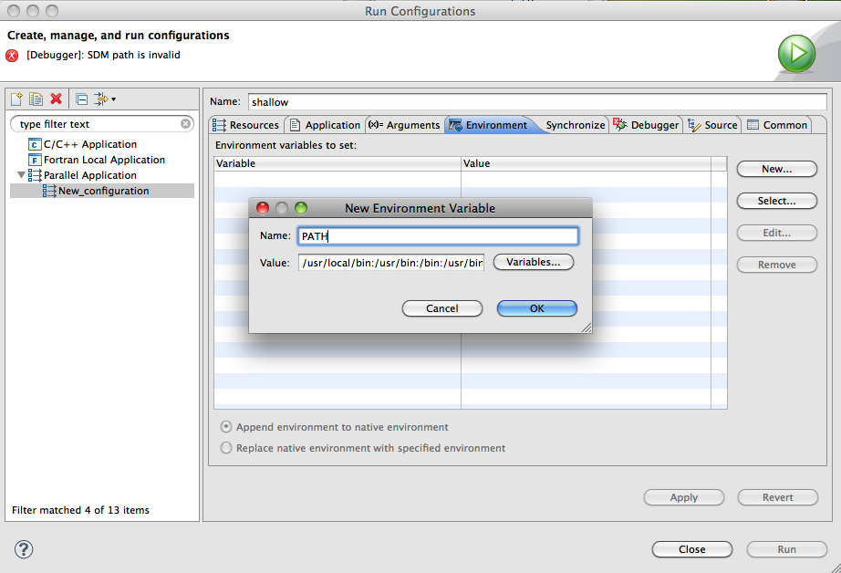
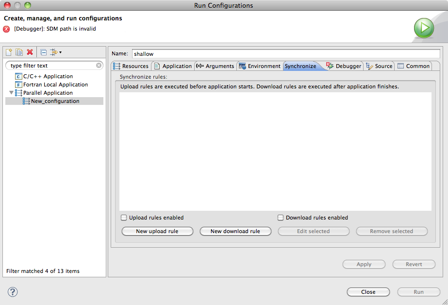
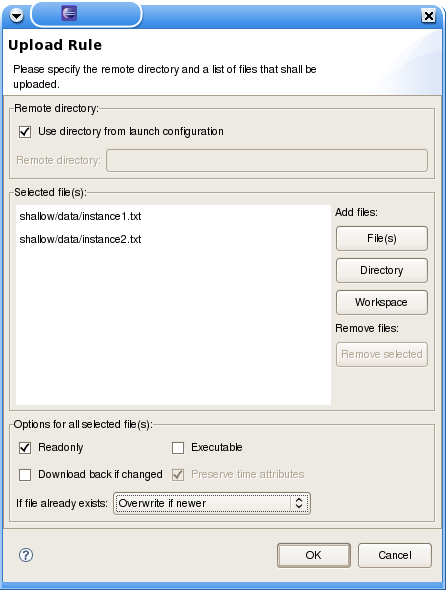
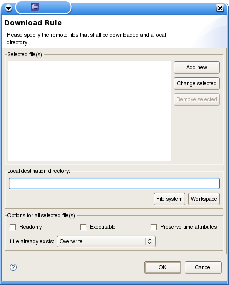
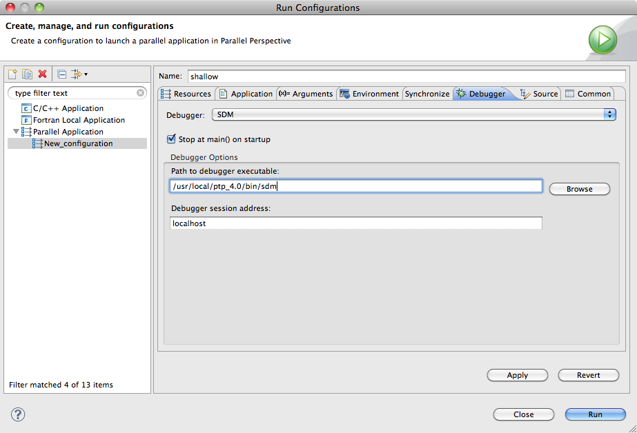

This section describes how to launch a parallel program. In PTP, this is called "launching a job". Launching requires the services of a resource manager, which should have been set up as described in Resource Managers. PTP is able to launch parallel applications that use a variety of programming models (e.g. MPI, OpenMP, UPC, etc.) provided that the resource manager supports the programming model. It is also possible to launch multiple copies of a sequential program so that they execute simultaneously.
Eclipse uses a launch configuration to encapsulate all the settings and arguments necessary to launch a job normally or under the control of a debugger. A launch configuration is create using the Run > Run Configurations... or Run > Debug Configurations... menus. The only difference between the two is the ultimate action that will be taken; all the configuration information is common and can be used to launch subsequent normal or debug jobs.
This section only describes how to launch a parallel program. A description of how to monitor the application launch is provided in the Monitoring Parallel Machines and Jobs. A description of how to debug an application is provided in the Parallel Debugging.
Topics include:
Note: At least one resource manager must have been configured before it is possible to create a parallel application run configuration.
To run the job normally, open the Run Configuration dialog using Run > Run Configurations... or click the run icon menu on the tool bar and select Run Configuration....
To run the job under the control of the debugger, open the Debug Configuration dialog using Run > Debug Configurations... or click the debug icon menu on the tool bar and select Debug Configuration....
Create a new Parallel Application launch configuration by clicking Parallel Application and then clicking on the New button icon. For brevity, only a normal launch configuration will be shown.

Enter a name for the configuration in the Name: field. Here we use the same name as the project.

The Resources tab is used to specify the resources required for the job execution. The contents of this tab will vary for different resource managers. This description only applys to the Open MPI and MPICH2 resource managers.
Select a resource manager you wish to use from the drop-down. If there is only one resource manager, then it will be automatically selected. If the resource manager you have selected is not running, then you will see a warning message in the dialog.
Enter a value in the Number of Processes field. This field must be greater than 0 in order to launch a job, and specifies the number of processes to use for the application launch.
Fields in the Options section correspond to command-line options supported by Open MPI. If desired, it is also possible to specify a file containing the list of hosts on which to run the application using the Host file field, or the list can be entered directly into the Host list field.

The Application tab is used to specify the application (executable) to be launched.
Ensure that the correct the Parallel Project is selected. This is the project containing the source and binaries for the application.
Select the Application Program (executable) you wish to launch. If the resource manager is connected to a remote target, then this means the path of the executable on the remote target. Otherwise, for a resource manager on the local machine, it should be the path to the executable within the project directory.
If you are running the application on a remote machine and the project was built locally, then you will have to copy the executable to the remote machine first. For this purpose, you may enable Copy executable from local filesystem and fill Path to the local file with the path to the executable within the project directory. This configures the launcher to copy the executable automatically to the remote target before starting the run/debug session. If not enabled, then you will need to copy the executable manually to the remote target.

If you wish to have the output from all processes in a single output console, ensure that the Display output from all processes in a console view option is checked.
The Arguments tab is used to specify any command-line arguments require by the parallel application and to modify the working directory.
Enter any arguments required by the application in the Parallel program arguments field. This is a free form text field that will be passed to the application verbatim.
Select a different working directory if desired. The working directory is set just prior to the application launch. Note that for a remote launch, this will be a directory on the remote machine.

The Environment tab is used to specify any environment variables require by the parallel application or in order to run the application. The tab also provides the option to append the environment variables to the native environment, or to replace the native environment with the variables specified in the tab.
Use the New... button to create a new environment variable.
Use the Select... button to import environment variables.
Use the Edit... button to edit an environment variables.
Use the Remove... button to remove an environment variables.

The Synchronize tab is used in scenarios where the resource manager is connected to a remote target. The tab specifies rules that describe files or directories that need to be copied (uploaded) to the remote target before starting the parallel application execution. Typically, this feature is used to upload dependencies (like dynamic libraries) or input data for test cases.
This tab also allows to specify rules describing files on the remote host to be retrieved back (downloaded) to the local host after the parallel application finishes execution, as output data produced by the parallel application execution.
If you wish to enable file transfer to the remote target, enable the Upload rules enabled or Download rules enabled according which direction of file transfer is required.

In order to specify files to be copied from the local system to the remote target (uploaded), click on New upload rule. An upload rule lists a collection of files or directories that shall be copied into a single directory.
If Use directory from launch configuration is enabled, then the listed files or directories are copied to the working directory specified on the launch configuration. At the moment, this is equivalent to same directory that contains the executable for the parallel application. If not enabled, they you must specify on Remote directory a path where the files or directories will be placed. The path may be absolute or relative (to the working directory).
In the list underneath, Selected file(s), add the files or directories that shall be copied. Click on File(s) to select one or more individual files from anywhere in the local file system. The Directory button works similarly to select a directory from the local file system. Directories are copied recursively. The Workspace button allows easily choosing files from the current workspace.
On the bottom of the dialog, you may wish to set attributes to be applied to the copied files on the remote target. The options Readonly or Executable sets all copied files to read-only or executable on the remote host. If Preserve time attributes is enabled, then the remote copy will assume the same time stamp then the local file, otherwise, the time stamp will be the time the file was copied. Also, if the file already exists on the remote target, you may choose how to react in the If file already exists dropdown.

In order to specify files to be copied from the remote target to the local system (downloaded) after the parallel application finishes, click on New download rule.
An download rule lists a collection of files or directories that shall be copied into a single local directory. Its options are very similar to the upload rule.

The Debugger tab is only required if you are planning to debug the application. However you must complete it now, even if you are only planning to launch a non-debug job.
If no debugger is visible in the Debugger drop-down, select one. This is the debugger that will control the parallel debug session. Currently only SDM is supported (SDM stands for Scalable Debug Manager), so select this.
If you wish the debugger to automatically suspend the application on launch, make sure Stop in main() on startup is checked
Under Debugger options, make sure that the path to debugger executable is correct.
If you are debugging on the local machine, this path should
point to the sdm executable in your Ecilpse installation's
plugins/org.eclipse.ptp.os.arch_version/bin
directory, where os.arch_version is your operating
system (linux, macosx, or aix),
architecture (x86, x86_64, or ppc),
and version number of the plugin (e.g. 4.0.0.201006081437).
If you are debugging remotely, then this path will be the path
to where the sdm executable was installed on the remote
machine.
Set the Debugger session address. This is the address that the debugger will connect to when it starts, and will depend on where you are launching the application:
If you are launching onto the local machine, or onto a remote
machine using port forwarding, use localhost. (Note that
you will need to have the GatewayPorts option set to yes
in the sshd configuration file on the remote system for
this to work with port forwarding.)
If you are launching onto a remote machine without using port forwarding, then this should be the address of the local machine (the one running Eclipse). This address must be accessible from the remote machine.. If your local network configuration precludes the remote machine accessing your local machine, you will need to reconfigure the resource manager to use port forwarding.

The launch configuration is now complete. Click on the Apply button to save the configuration. If you are running the application, click on the Run button to launch the job, and Eclipse will automatically switch to the Parallel Runtime Perspective. If you are debugging the application, click on the Debug button and Eclipse will automatically switch to the Parallel Debug Perspective.